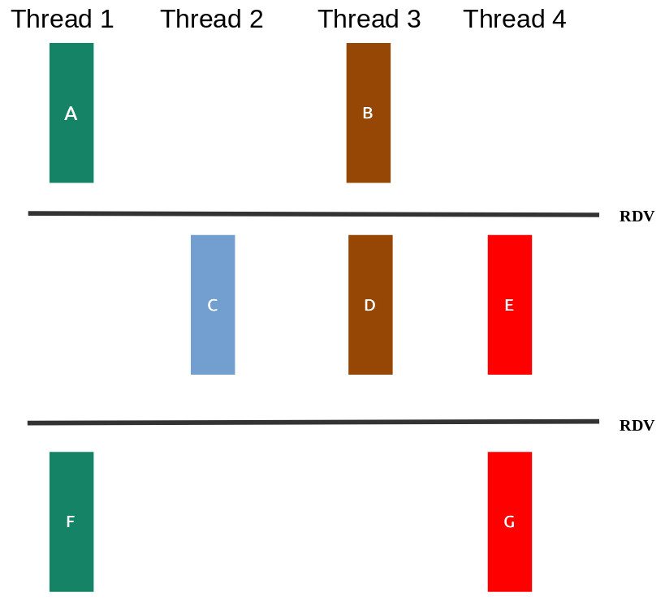

Neste prova iremos avaliar os objetivos de aprendizagem trabalhados
na segunda metade do curso. Cada pasta contém os arquivos de uma questão
da prova, incluindo arquivos .c para vocês colocarem suas
soluções.
Cole os arquivos desta prova em seu repositório de entregas da disciplina, tendo estes caminhos a partir da raiz:
provas/af/q1provas/af/q2provas/af/q3provas/af/q4Vamos utilizar o servidor para receber a nota em cada questão. Será necessário soltar releases! A correção será sequencial, ao primeiro problema, irá parar (ou seja, precisa resolver os problemas anteriores para que os próximos critérios sejam considerados).
As issues já terão a sua nota no exercício. Como de costume, um pass significa que o servidor não encontrou problemas em sua solução (não que ela esteja correta!). Teremos uma fase de validação extra pelos professores, envolvendo, por exemplo:
A figura q1/sincronizacao.png ilustra as relações de
dependência entre as partes das funções
thread1, thread2, thread3 e thread4, mostrando
que algumas delas poderiam ser feitas de maneira concorrente.

Seu trabalho nesta questão será:
OBS:
Você não deve introduzir novas dependências. Ou seja, se seu programa criar relações de dependência além das da figura seu trabalho valerá no máximo 50%.
Não altere os printf existentes, nem adicione
novos.
Importante: Caso use variáveis globais na solução da questão a nota será zero (mesmo que passe nos testes).
Como descrubro minha nota?:
Será pelo corretor automático. Suba as alterações para o git e solte uma release:
git tag -a afq1.x.y -m "enviando a afq1.x.y"
git push origin afq1.x.yNeste exercício, o programa q2 recebe como argumento da
linha de comando o nome de um arquivo com senhas e um
custo por chamada de API. Sua tarefa é chamar a nova
versão do executável criptInsper que
simula a recuperação de senhas contido em arquivo, e no
final da execução, o programa q2 calcula o gasto total com
as chamadas da API.
Exemplo de como seu programa q2 será chamado:
./q2 senhas.txt 0.1As senhas no arquivo senhas.txt serão recuperadas pelo
executável criptInsper, disponível de forma compilada para
x86 na pasta da questão.
O executável criptInsper tem o seguinte padrão de
chamada ./criptInsper arquivo 0 onde arquivo
representa um arquivo com senhas para serem recuperadas e 0
representa quantas vezes você já tentou processar este arquivo. Assim na
primeira vez que o criptInsper é chamado para processar o
arquivo senhas.txt, devemos utilizar
./criptInsper senhas.txt 0. Caso o processo falhe, então
tentamos novamente usando ./criptInsper senhas.txt 1. Se
falhar mais uma vez, o uso deve ser
./criptInsper senhas.txt 2 e assim sucessivamente até que
ele saia com sucesso.
O executável criptInsper retorna 0 quando a
chamada é feita com sucesso, ou -1 quando recebe uma
chamada errada (quantidade incorreta de argumentos). Você não precisa se
preocupar com o que de fato o executável criptInsper faz e
como faz, apenas considere que ele deve processar o arquivo de senhas e
retornar um resultado (o formato do arquivo de senhas pouco importa, o
arquivo pode nem sequer precisa existir, é tudo
simulado).
Apesar de ter sido contrato um novo programador, o
criptInsper agora tem falhado além do habitual, além disso
as vezes as chamadas ao programa criptInsper são
interrompidas devido a sinais gerados pelo sistema operacional. Dessa
forma você deve trabalhar no arquivo q2.c para:
criptInsper,
passando para o criptInsper o primeiro argumento recebido
pelo executável q2 (que é o arquivo de senhas) e um inteiro
com a quantidade de vezes que você já tentou recuperar as senhas no
arquivo (na primeira vez, passe 0, se o programa for
finalizado por sinal, passe 1, e assim
sucessivamente).CRIPTINSPER TERMINOU NORMALMENTE!\n (10% da
nota).CRIPTINSPER TERMINOU COM SINAL %s\n, substituindo
%s pelo texto que descreve o sinal. (40% da
nota)CRIPTINSPER até que ele finalize
normalmente. No final, sempre imprima o gasto total (double) no padrão
TIVEMOS UM GASTO TOTAL DE %.2f\n. Aqui, lembre de atualizar
em mais um a quantidade de vezes que você já tentou recuperar as senhas
(50% da nota)Atenção:
Imprima EXATAMENTE conforme solicitado, sem deixar espaços antes
ou depois das frases. Dê apenas um \n ao final. Por via das
dúvidas, utilize fflush(stdout).
O gasto total é calculado pela quantidade de vezes que é
preciso chamar o criptInsper multiplicada pelo
custo por chamada de API.
Trabalhe no arquivo q2.c e complete as partes
faltantes
Compile com gcc -g q2.c -o q2
Deixei um arquivo executável q2_ref que exemplifica
o comportamento desejado do programa final (é um gabarito!). Teste, por
exemplo, com ./q2_ref senhas.txt 0.1 e utilize como
referência!
O executável criptInsper tem comportamento
determinístico. Se você programar corretamente e passar os argumentos
corretamente para o criptInsper, deve obter as mesmas
saídas que o q2_ref para as mesmas entradas.
Nesta questão você deverá usar as funções de gerenciamento de
processos e chamada de executáveis vistas em aula. Você não pode, por
exemplo, usar system.
Como descrubro minha nota?:
Será pelo corretor automático. Suba as alterações para o git e solte uma release:
git tag -a afq2.x.y -m "enviando a afq2.x.y"
git push origin afq2.x.yNessa questão temos um arquivo texto de entrada com várias palavras
armazenadas, em várias linhas, a sua tarefa é remover a primeira e a
última palavra de cada linha. Considere que sempre teremos pelo menos
duas palavras no arquivo texto e uma palavra é qualquer seguência de
caracteres minúsculas (‘a’-‘z’) com no mínimo uma letra, as palavras são
separadas por espaços em branco, e somente um espaço entre palavras, não
tendo espaços em branco no início e no final da linha. Cada linha no
arquivo é finalizada com o caractere '\n'. E por fim, para
facilicitar sua implementação, considere cada linha do arquivo tem no
máximo 100 caracteres.
Por exemplo para o arquivo caso1.txt temos o seguinte
conteúdo:
hoje tem avaliacao final de sishard
a b
A saída do seu programa deve ser realizada para o arquivo
q3_saida.txt com a primeira e a última palavra de cada
linha eliminada.
hoje tem avaliacao final de
Note que os espaços em branco no início e no final da primeira também
foram removidos, na segunda linha só restou um caractere
'\n'.
Abra o arquivo q3.c e veja que já tem uma parte do
código desenvolvida, para compilar o programa use:
gcc q3.c -g -o q3Na execução do programa q3 é informado o nome do arquivo
texto conforme abaixo:
./q3 caso1.txtPara testar sua implementação você pode usar o script abaixo:
./teste.shA sua tarefa nessa questão está dividida em três partes:
A primeira é programar a função
char *le_linha_arquivo(int fd) que retorna uma string
contendo toda linha do arquivo texto apontado por fd,ao
chegar no fim do arquivo a função dever retornar NULL.
Considere que o arquivo já está aberto e deve ser fechado apenas na
main. Para ler, é obrigatório utilizar apenas a chamada
read, ou seja, não permito usar a função
getline por exemplo. (30% da
nota)
O programa gera o arquivo q3_saida.txt com as linhas
do arquivo de entrada sem a primeira e última palavras. (50% da
nota)
Programa passa no valgrind sem erros. Aqui, também será
necessário liberar memórias alocadas na função main() no
código que receberam pronto! (20% da nota, apenas se
resolveu corretamente os itens anteriores)
Atenção:
Dica: Para identificar possíveis erros, habilite a visualização
de espaços em branco no VSCode, vá em
Settings->Render Whitespace->all.
Para manipular os arquivos, utilize APENAS as chamadas vistas em
aula: open, close, read,
write. Não pode utilizar fopen,
fdopen,fgets, fscanf por exemplo.
Também não é permitido utilizar funções da
string.h. Ex: strlen, strcpy,
strchr, strcat, strrchr, etc. Se
utilizar, a nota do exexcício será zero (mesmo que passe nos
testes).
Faça seus próprios arquivos de teste personalizados!
Como descrubro minha nota?:
A nota da questão virá pelos testes automáticos e valgrind. A análise visual pelo professor será apenas para confirmar que nenhuma regra foi quebrada! Assim faça upload das alterações para o git e solte uma release:
git tag -a afq3.x.y -m "enviando a afq3.x.y"
git push origin afq3.x.yNessa questão você está encarregado de desenvolver uma aplicação, na
linguagem C, que simule o processamento de dados de sensores em uma
fábrica. A aplicação coleta dados de N sensores que
monitoram diferentes partes da fábrica. Cada sensor primeiro coleta os
dados de forma independente, mas só pode processar e enviar os dados,
depois que todos os sensores tiverem coletados seus dados.
No programa q4.c cada sensor é uma thread, representado
pela função void *sensor(void *arg), e a quantidade de
sensores (threads) é informada por linha de comando ao programa
Para compilar o programa q4.c você pode usar
gcc -g q4.c -o q4 -pthread, e para executar
./q4 100, onde 100 é a quantidade de threads
(sensores) a serem criadas.
Sua tarefa nesse exercício é:
Terminar a implementação da função main(), criando a
quantidade de threads informada por linha de comando e fazendo com que
função espere para que todas as threads terminem. (30% da
nota).
Declarar e inicializar os sematóros e mutex na função
main(), de forma que o sincronismo entre os sensores seja
obdecido. O sincronismo entre sensores deve ser implementado na função
void *sensor(void *arg). Se usar variável glogal terá um
desconto. (50% da nota).
O programa passa no valgrind sem erros (20% da nota, apenas se resolveu corretamente os itens anteriores).
Como descrubro minha nota?:
Será pelo corretor automático. Suba as alterações para o git e solte uma release:
git tag -a afq4.x.y -m "enviando a afq4.x.y"
git push origin afq4.x.y